Earshot: one look for logo, app and website
Decision sheet. Nothing in the product was changed. App renders are the real SwiftUI views drawn with sample data from patched scratch copies; the website images are headless Chrome screenshots of site/index.html.
1. Today: three looks that do not agree
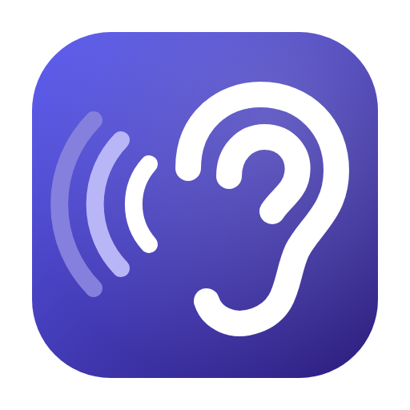
Indigo gradient #5B5BF0 to #2A1A7A, white ear, three fading waves. Speaks in violet.
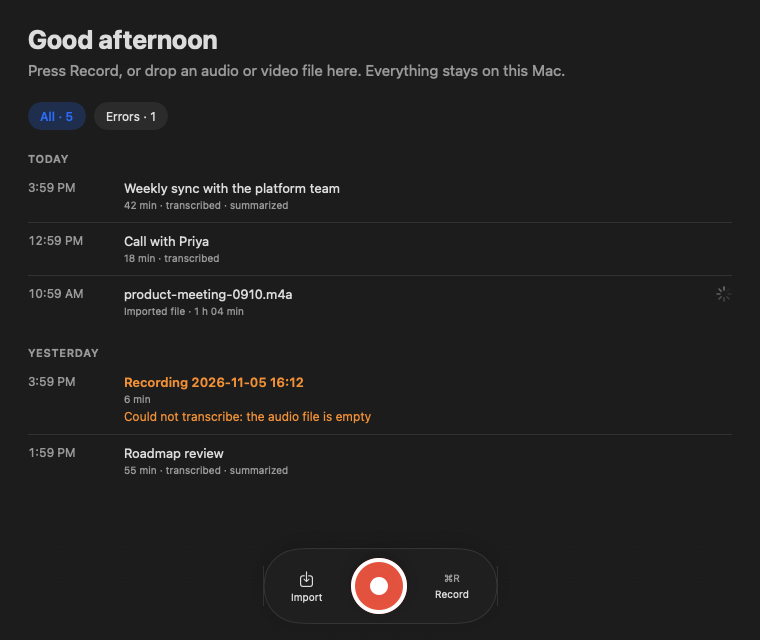
Dark charcoal, hairline borders, rounded cards. Accent is the system blue (follows the user's macOS setting); orange means warning; red means recording.
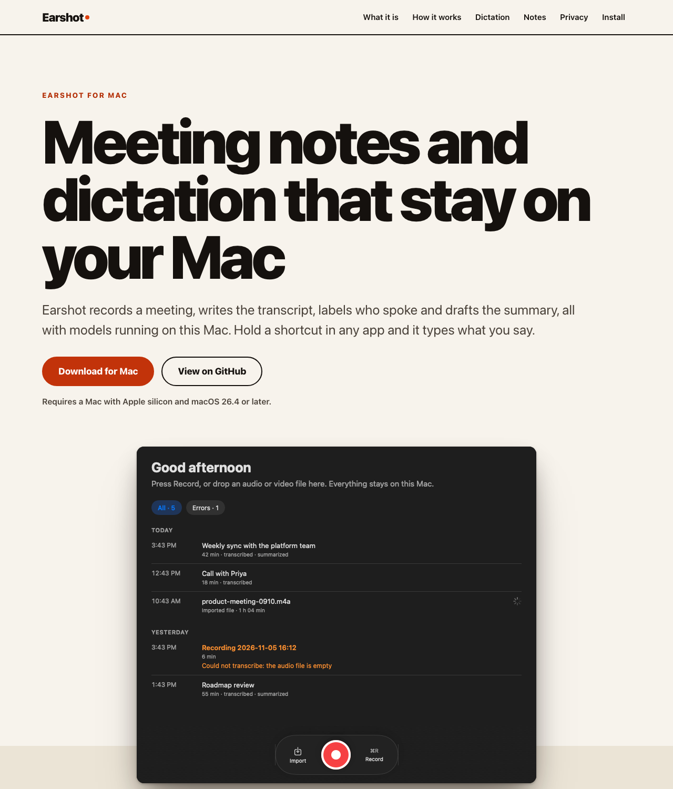
Light paper #F7F3EC, huge black 900-weight headline, 2 px black rules, flame-orange #E0400D. The only orange the app has is for warnings and the dictation flame, so the site and the app share no colour at all except by accident. (The site does ship a dark scheme: website-dark.png.)

The app has a fourth, unspoken identity: the dictation flame, hard-coded orange #FF8C1A. It is the product's most memorable moment and it is the colour of neither the icon nor the UI accent. That is the opening for the proposal.
2. Proposal: one flame-orange brand
Dark charcoal surfaces and hairlines everywhere (as the app already is), one accent, flame orange #F97316, used for the logo, the app accent and the site.
Palette and contrast
| Pair | Ratio | Verdict |
|---|---|---|
| Flame 500 text on #1C1C1C | 6.08:1 | Passes AA for body text |
| Flame 500 text on its own 22 percent selected-pill fill (measured #49301E) | 4.34:1 | Just under 4.5. Use Flame 400 for pill text: 5.38:1 |
| White text on Flame 500 button | 2.80:1 | Fails. Do not put white text on #F97316 |
| #141414 text on Flame 500 button | 6.57:1 | Passes. Use dark text on orange fills |
| White on Flame 600 #EA580C | 3.56:1 | Only for 18 pt bold or larger |
| White on Ember 700 #C2410C | 5.18:1 | Passes: the light-page button colour |
| Flame 500 text on paper #F7F3EC | 2.53:1 | Fails. On light backgrounds use Ember 700 (4.68:1) |
| System orange #FF9F0A (today's warning) on #1C1C1C | 8.29:1 | Fine for contrast, but it is the same hue family as the new accent |
Ratios computed from the sRGB values with the WCAG formula. Switch knobs and the logo are graphics, so the 3:1 rule applies, and orange on charcoal clears it.
Three logo concepts
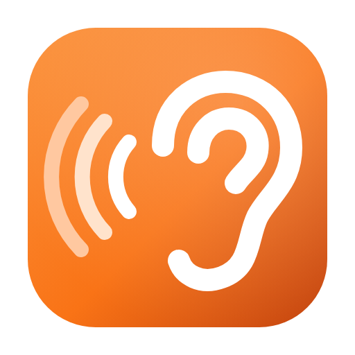
512Today's mark with the indigo swapped for the flame gradient (#FB923C to #F97316 to #C2410C). Smallest change; reads as "Earshot, but orange".
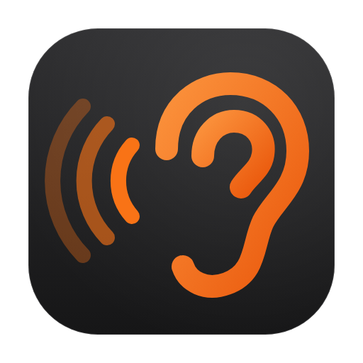
512Charcoal tile with a hairline edge, orange ear, orange waves fading. It is the app window in icon form. Trade-off: the outer waves are faint at 32 px and the tile melts into a dark Dock or dark wallpaper.
Ear plus one wave, and where the outer wave was there is now a flame: sound goes in, fire comes out where you dictate. Trade-off: it drops the mid wave, and at 18 px in the menu bar the flame is a blob, so keep the plain ear-and-wave template there (logo-a-menubar.svg).
For reference, today's mark at 64 px: . Each concept also exists as a monochrome template SVG for the menu bar (logo-*-menubar.svg), black on transparent, which macOS tints.
The app, current against flame
Same views, same sample data, same dark appearance. Only Color.accentColor becomes #F97316. Selected filter pill, selected sidebar row and the switches take the new accent; failed rows and the permission banner stay system orange, which now sits very close to the accent (see trade-offs).
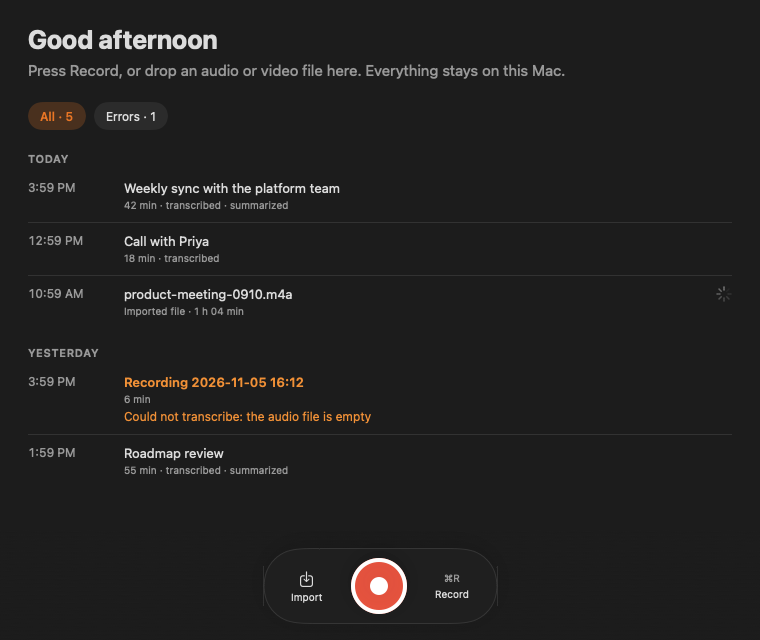
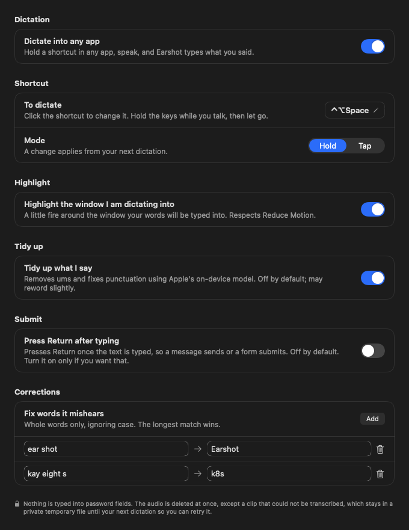
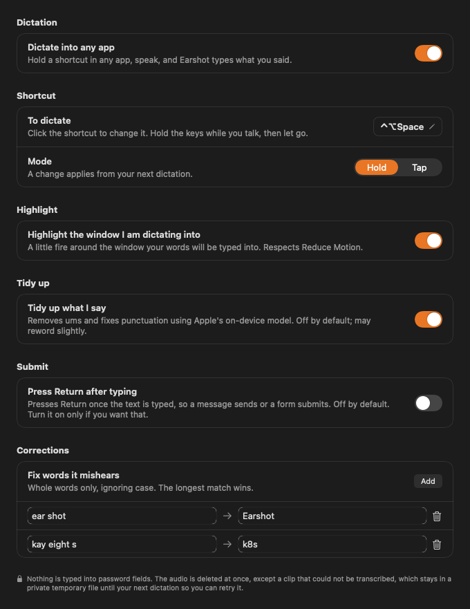

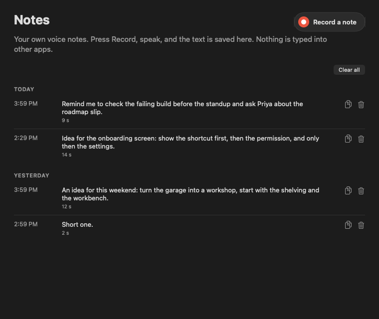
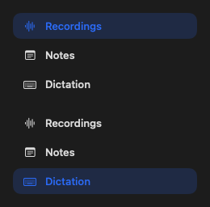
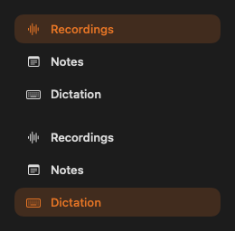
Honest limits. (1) The Notes scene shows almost no accent either way: that screen is neutral plus red. (2) The switches and the Hold/Tap control in these renders are small stand-ins drawn in the accent colour, because the native ones draw grey when rendered off-screen; an active native switch is blue today and would be orange only if the app sets .tint. (3) The Dictation scene hides the Accessibility permission banner so the good state shows. Nothing was rendered of the dictation flame itself or of the live recording screen in flame colours.
The website, changed to match the app
Meeting notes and dictation that stay on your Mac
Earshot records a meeting, writes the transcript and drafts the summary, all on this Mac.
What changes on the site
- Default to dark: page #1C1C1C (the app window), alternating bands #141414, text #F2F2F2, secondary #9A9A9A. Keep a light scheme only as an opt-in.
- Replace the 2 px black rules and 3 px panel borders with 1 px #323232 hairlines, and 12 to 16 px rounded cards, as the app does.
- Accent: one orange. Fills #F97316 with dark #141414 text; links and small accent text #FB923C; on any light section use #C2410C.
- Keep the single bold headline treatment (800 to 900 weight, tight tracking) but cap it near 4.5rem, and set only one phrase in orange. Section numerals stay, in orange.
- Hero image: the flame-accent app render at full width with a faint orange glow, so the first thing a visitor sees is the app itself.
- Brand: replace the orange dot after the wordmark with the new icon. Reuse the app's dictation flame as the one decorative motif.
The left panel is a flat HTML mock of the idea, not the real site.
3. Trade-offs to decide with open eyes
- Blue follows the user, orange does not. Today the selection colour and switches follow the user's macOS accent setting. A fixed orange overrides that for selected pills, the sidebar and anything the app tints. Native switches and segmented controls need an explicit tint to follow. This is a deliberate brand-over-system choice, and some Mac users dislike it.
- Orange now means two things. The app uses system orange for errors and warnings. With an orange accent a failed row and a selected pill look related. Proposal: move warnings to amber #FBBF24 with the warning triangle always present, and keep red for recording. Without that, the flame accent weakens the error signal.
- White on orange fails contrast (2.8:1). Orange buttons and pills need dark text, which is also a different look from the usual white-on-colour buttons.
- Record red and flame orange are neighbours. They stay distinct in the renders (red dot against orange accent) but both are warm; the red record button is the one thing that should not become orange.
- The icon is a file edit, not a setting. Changing it means editing
assets/Earshot.icon/icon.json(the gradient stops, in extended sRGB) and the layer SVGs inassets/Earshot.icon/Assets/, plusassets/earshot-logo.svgandassets/menubar.svg, then rebuilding with Icon Composer output. These concepts are flat SVG: the layered Liquid Glass icon (ear layer, wave layers) was not rebuilt.
4. Recommendation
- 1. Pick concept C for the app icon: it is the only one that carries both ideas (ear, and dictation fire), and the flame is the app's most distinctive feature. Fall back to A if the flame looks muddy in the real Dock.
- 2. Why not B: it matches the window best but is the least visible in a dark Dock and has the faintest waves at 32 px.
- 3. App accent and icon: set one
Color.flame = #F97316and replace everyColor.accentColor(pill, sidebar, shortcut border) and add.tintat the window root so switches follow; use dark text on orange fills; selected-pill text #FB923C; move warnings to amber; point the dictation flame at the same #F97316 instead of #FF8C1A. - 4. Icon files: edit
assets/Earshot.icon/icon.jsonfill stops to #FB923C and #C2410C, redraw the wave-far layer as the flame, recolour layers to white, then updateearshot-logo.svg; keepmenubar.svg(ear plus one wave) as is. - 5. Website: dark charcoal default, 1 px hairlines, rounded cards, orange #F97316 with dark text and #C2410C on light sections, one headline treatment, flame-accent app screenshot as the hero, new icon in the header.
- 6. Order of work: accent and icon first (the app is the source of truth), then regenerate the site screenshots from the app, then restyle the site, so the three never drift again.